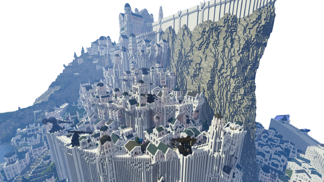

Minecraft est un jeu de type bac à sable dans lequel il est possible de créer à peu près tout ce dont on a envie. Après une certaine experience, vous serez en mesure de réaliser des prouesses.

Afin de créer des compositions harmonieuses et des constructions originales, il faut maitriser quelques points rapides. Ensuite, vous pouvez aussi vous specialiser et apprendre à utiliser des plugins comme World Edit.
Etape 1 : Le plan
Afin de bien preparer son build, il vaut mieux commencer par un plan de ce que l'ont veut. Il n'est pas forcement nécessaire de faire de l'ultra précis mais plus pour avoir une idée globale de à quoi vas ressembler le build.
Etape 2 : Preparer la zone
Pour bien préparer son build, il faut préparer l'endroit où il sera. Si c'est une parcelle prévue pour sembler naturelle, cette methode s'appelle du terraforming